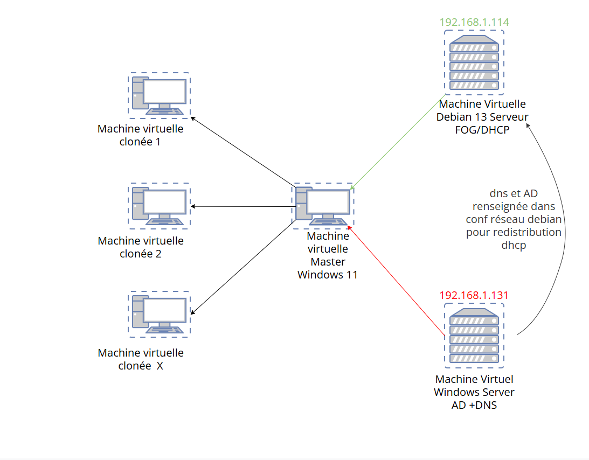

Étudiant en 2ᵉ année BTS Services Informatiques aux Organisations, spécialité Solutions d'Infrastructure, Systèmes et Réseaux.
Je suis actuellement en BTS SIO , spécialisé dans l'administration de systèmes et réseaux.
Passionné par l'informatique, j'apprécie particulièrement la conception, l'administration et l'évolution des infrastructures informatiques. J'aime comprendre le fonctionnement des systèmes, résoudre des problématiques techniques et développer mes compétences à travers des projets concrets. Ce portfolio présente les différents projets que j'ai réalisés au cours de ma formation et de mes expériences en entreprise, illustrant ma progression et les compétences que j'ai acquises.
Je vise une poursuite d'études en licence ? ou une entrée directe en alternance comme technicien systèmes et réseaux.

Décris ici plus précisément les étapes : préparation du poste master, configuration du serveur FOG, paramétrage de l'unattend.xml, tests de déploiement sur plusieurs machines, difficultés rencontrées et solutions apportées.
Remplace ce texte et les images par les détails réels de ton projet.
Décris ici la configuration Docker Compose, les volumes utilisés, la création des canaux et rôles, ainsi que les éventuels tests de charge ou de sauvegarde réalisés.
Remplace ce texte et les images par les détails réels de ton projet.
Décris ici les équipements supervisés, les seuils d'alerte configurés, et un exemple concret d'incident détecté grâce à cette supervision.
Remplace ce texte et les images par les détails réels de ton projet.
Décris ici la configuration du tunnel IPsec, le paramétrage du failover 4G, et les tests de coupure réalisés pour valider la bascule automatique.
Remplace ce texte et les images par les détails réels de ton projet.
Synthèse des freins constatés en alternance lors du passage d'un parc en double pile IPv4/IPv6, et des bonnes pratiques de transition.
Étude comparative entre VPN traditionnel et architecture ZTNA pour le travail hybride, appliquée à un cas d'usage PME.
Veille sur les techniques de mitigation DDoS au niveau switch/routeur et mise en pratique sur maquette Packet Tracer.
Spécialisation en solutions d'infrastructure, systèmes et réseaux .
Premières bases en câblage réseau, configuration d'équipements informatique.
Premiers projets de découverte numérique en option technologie, point de départ de spécialisation en informatique.